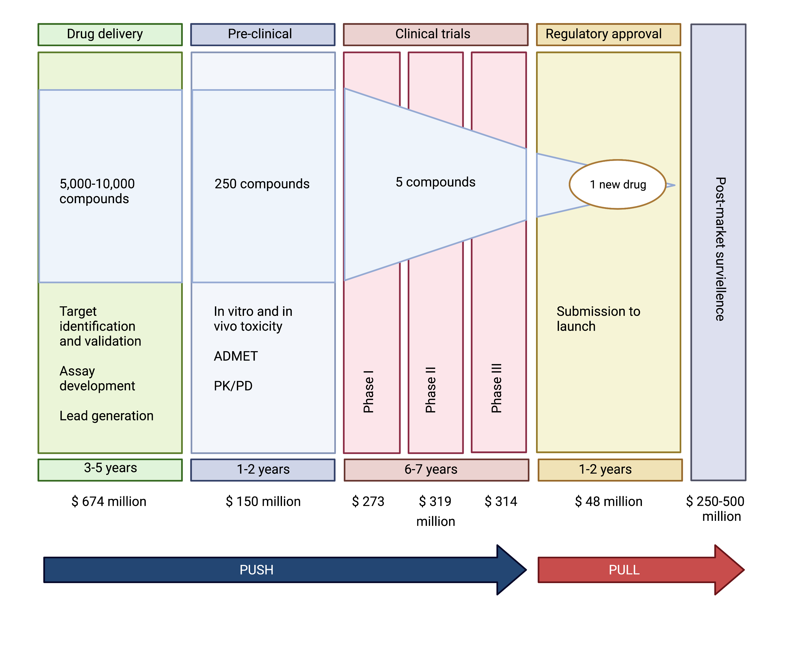

What are the current strategies to incentive antibiotic development?
Incentives for antibiotics are categorized as either ‘push’ or ‘pull’. Push incentives occur before regulatory approval by the FDA or European Medicines Agency, and the funding supports many projects, including the many that fail before approval. Pull incentives are paid only after regulatory approval and hence only successful products are supported. Both push and pull incentives are required to address our pressing problems.
Many successful initiatives to establish push funding for antibiotics have been developed over the last decade including:
- Innovative Medicines Initiative New Drugs for Bad Bugs (launched in 2012; funds made available €223 million
- CARB-X (launched in 2016; funds made available US$455 million)
- Novo Holdings REPAIR Impact Fund (launched in 2018; funds made available US$165 million).
- Global Antibiotics Research and Development Partnership. GARDP . Funded by over 60 partners in 20 countries. Seeking 500 million dollars to develop 5 new antibiotics by 2025.
- European Gram Negative AntiBacterial Engine (ENABLE)

Figure 3. Pathway from drug discovery to regulatory approval and estimated costs. ADMET- studies to document drug absorption, distribution, metabolism and elimination, and toxicity in animals. PK/PD pharmacokinetic/ pharmacodynamic relationships- i.e. dose response and toxicity relationships from animals.
However, as the Achaogen story illustrates, pull funding may be the greatest challenge. Pull incentives are being actively discussed in the United States and Europe, building on the release of the DRIVE-AB final report in 2018. One of the strategies that has garnered the most attention is the the “Netflix model”
Figure 4. The “Netlfix Model” of Pull Incentives for
Figure 2. Push pull incentives in the drug discover and approval process.
What strategies can be used to ensure global access to future antibiotics?
Netflix model for antibiotics?
Figure 4. Changes in life expectancy over 500 years. Data source: World Health Bank
Economic strategies?
Incentives for antibiotics are categorized as either ‘push’ or ‘pull’. Push incentives occur before regulatory approval by the FDA or European Medicines Agency, and the funding supports many projects, including the many that fail before approval. Pull incentives are paid only after regulatory approval and hence only successful products are supported. Both push and pull incentives are required to address our pressing problems.